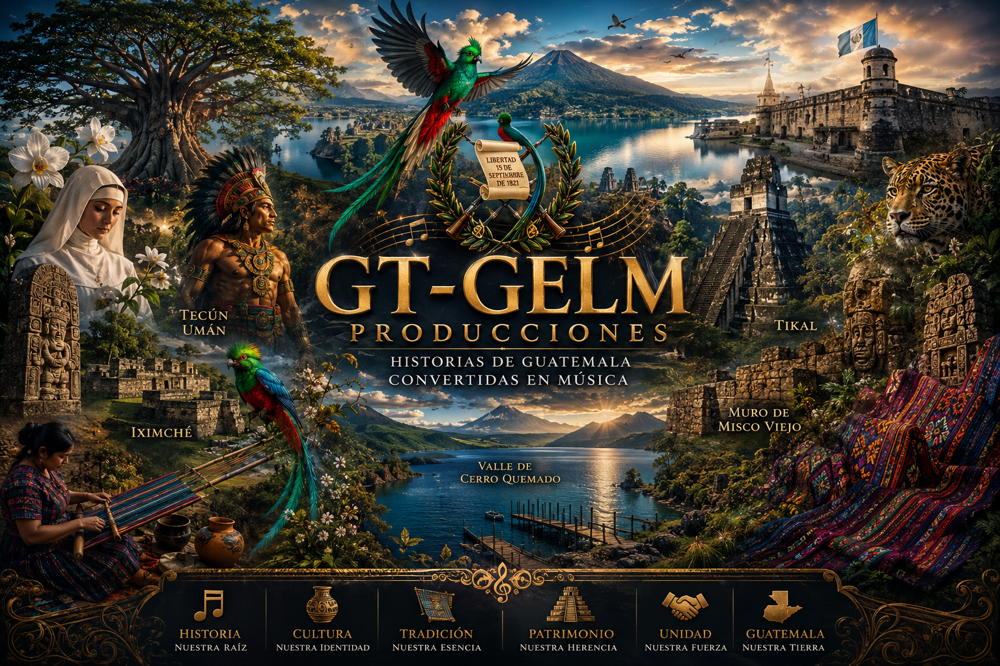

G
GT-GELM
PRODUCCIONES · REPRODUCTOR v4
☰ Biblioteca
▶ YouTube
◐

● GT-GELM
LISTO
GT-GELM · 048 · CULTURA
Guatemala Nunca Se Rinde
GT-GELM Producciones · Historias de Guatemala convertidas en música
⏮
▶
⏭
🔀
🔁
00:00
00:00
🔊
Silencio
🎵 Audio GT-GELM
▶ YouTube
⬇ Guardar offline
＋ Instalar
TEXTO
Letra de la canción
Ocultar
La letra aparecerá aquí al seleccionar una canción.
VIDEO
YouTube GT-GELM
Cerrar
BIBLIOTECA
GT-GELM ·
0
Cerrar
⌕
Todas
Historias
PMT
Cultura
Cargando colección histórica...